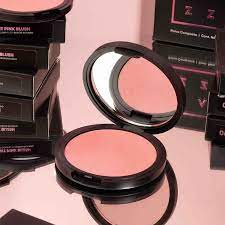

Labial
Existen muchos tipos de labiales: brillosos, cremosos, mates, con decoraciones, hidratantes, e incluso se encuentran con distintos olores y sabores.

Rubor
La palabra suele utilizarse cuando el enrojecimiento se corresponde a una respuesta emocional, ante ciertas emociones productoras de ansiedad como la vergüenza, la culpa, la ansiedad, el nerviosismo, el amor, el miedo, la modestia, el enojo o el alcohol.

Deliñador
El delineador de ojos es un cosmético y maquillaje utilizado para definir el contorno de los ojos. Se aplica alrededor del mismo para crear una variedad de ilusiones estéticas.